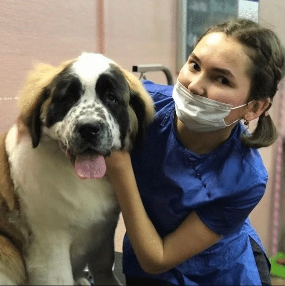
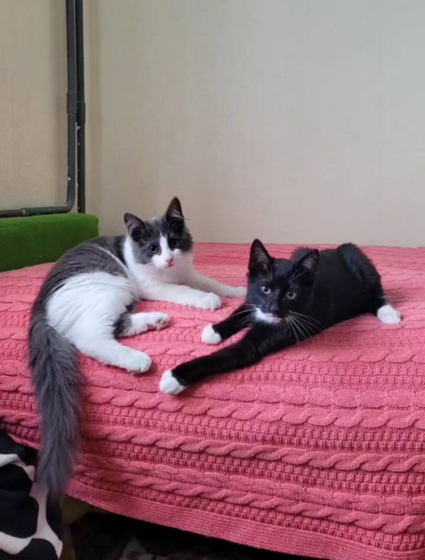

Меня зовут Клавдия, работаю в салоне стрижки животных "Анабель" в городе Санкт-Петербург - Пушкин. Выполняю свою работу аккуратно и с любовью.
Проходила учебу у Светланы Никитиной в ее собственном зоосалоне Stardogs, город Санкт-Петербург. Так же проходила различные онлайн-курсы и набиралась опыта в салоне "Анабель".
А это мои коты, Аркадий и Мефик. Они братья, сейчас им почти 7 месяцев. Они очень веселые и активные, любят вкусно покушать и все разбросать по дому.
